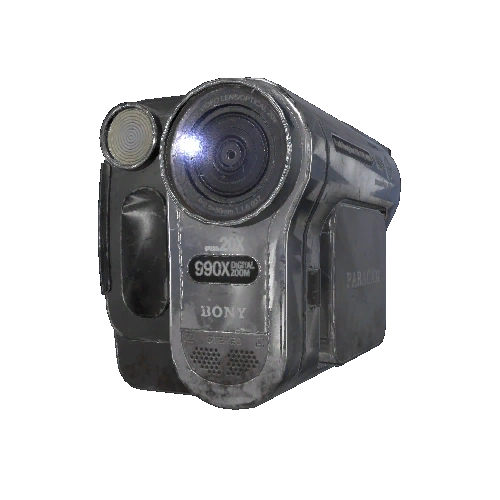

Equipamentos
Os equipamentos são usados para determinar o tipo de fantasma que habita o local, ou para completar objetivos opcionais.
Os jogadores receberão um conjunto de equipamentos iniciais rudimentares consistindo em oito objetos de Nível I:
um projetor DOTS, um leitor EMF, um livro de escrita fantasma, uma spirit box, um termómetro, uma luz UV, uma camera de vídeo e uma lanterna.
Projetor D.O.T.S


Nível 1 Nível 2 Nível 3
O Projetor DOTS pode ser colocado em uma parede ou no chão.
Ele emite uma matriz de pontos de laser verde brilhante numa pequena área do projetor.
Fantasmas com evidências de DOTS ocasionalmente entrarão em um " estado DOTS ".
Durante isso, uma silhueta tênue do fantasma será visível apenas
quando passar pela grade de laser.

Leitor EMF


Nível 1 Nível 2 Nível 3
O leitor EMF é um equipamento comprável, usado para ler a intensidade dos campos eletromagnéticos no ambiente próximo.
O leitor EMF é usado para detectar evidências de EMF Nível 5 .
O alcance efetivo do dispositivo, bem como a forma como a leitura é exibida, depende do nível do EMF Reader.
Segurar um leitor EMF ativo a 7,5 metros de um fantasma (ou 2,5 metros para um Yokai) durante uma caçada no mesmo andar atrairá o fantasma.
Durante caçadas ou quando o fantasma se manifesta, leitores EMF a 10 metros do fantasma (ou mais para um Raiju )
funcionarão mal e exibirão valores aleatórios entre os níveis 1 e 4.

Livro de Escrita Fantasma


Nível 1 Nível 2 Nível 3
O Livro de Escrita Fantasma é um equipamento usado para obter Escrita Fantasma ao colocá-lo perto de um fantasma.
Uma prévia translúcida do Ghost Writing Book aberto aparecerá enquanto o jogador mira numa superfície enquanto segura a tecla F.
O livro será colocado quando o jogador soltar a tecla.
Se Ghost Writing for um tipo de evidência para o fantasma, o fantasma tem uma chance de interagir com o livro escrevendo nele.
Quando isso acontece, o livro irá flutuar levemente e a caneta começará a rabiscar nas páginas.

Spirit Box


Nível 1 Nível 2 Nível 3
A Spirit Box cria ruído um branco ao circular constantemente por várias frequências de rádio, permitindo que o fantasma se comunique com os jogadores.
A Spirit Box pode ser ligada clicando no botão direito do rato. A Spirit Box emite um ruído estático constante enquanto ativa.
O LED/ícone do microfone indicará se a Spirit Box está a escutar ou a receber a entrada do microfone (quando a Ativação por Voz for usada).

Se estiver usando a IU baseada em texto, a IU aparecerá ao ligar a Spirit Box. Os jogadores podem clicar para selecionar uma das 3 perguntas.
O jogador pode sair da IU desligando a Spirit Box.

Termómetro


Nível 1 Nível 2 Nível 3
O termómetro é usado para ler as temperaturas no ambiente próximo e é a principal ferramenta para detectar temperaturas congeladas.

Luz UV


Nível 1 Nível 2 Nível 3
A luz UV é usado para detectar evidências ultravioleta, como impressões digitais e pegadas.
A luz UV pode ser ativada clicando no botão direito do rato enquanto a segura.
A luz UV pode ser ativada ao mesmo tempo que uma lanterna,
mas as impressões digitais ou pegadas visíveis podem ser difíceis de ver sob a sua luz.
A luz UV projeta uma luz roxa e essa luz é fraca em relação às lanternas.
As luzes UV de nível I e III não funcionarão se as lanternas forem desligadas nas configurações de dificuldade personalizadas.


Camera de vídeo
 

Nível 1 Nível 2 Nível 3
A camera de vídeo é usado para detectar Orbes Fantasmas.
Quando um jogador pegar a camera de vídeo, o ecrã flip abre automaticamente.
Se o jogador estiver dentro do caminhão, ele deve sair para o ecrã flip abrir.
A camera de vídeo pode ser usada na mão com seu display integrado ou colocada numa superfície plana ou num tripé.